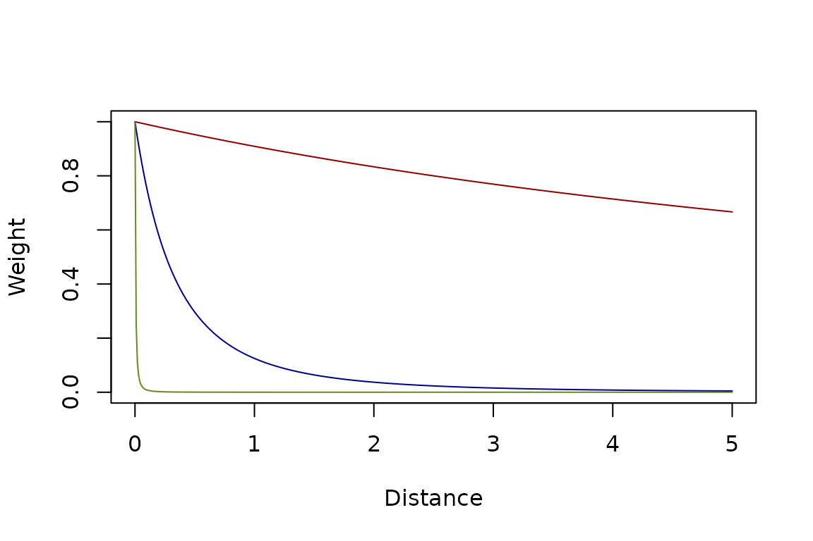
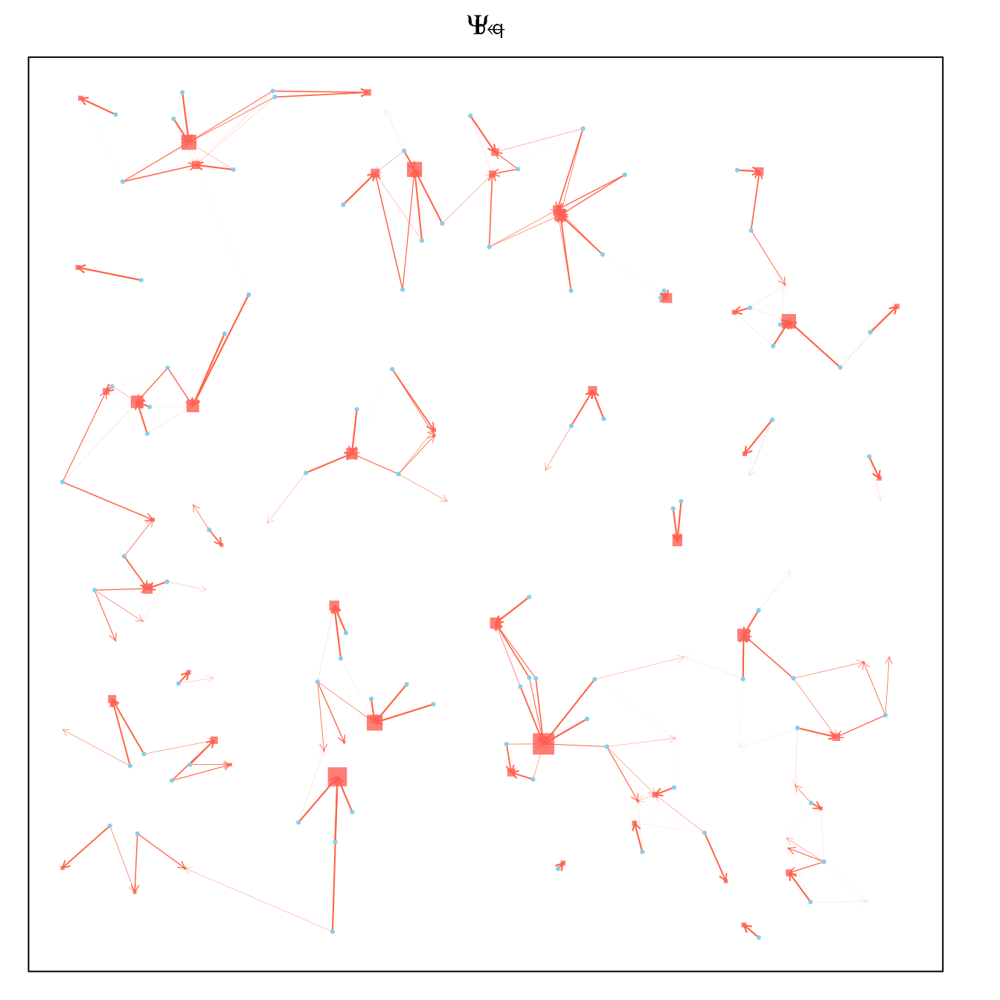
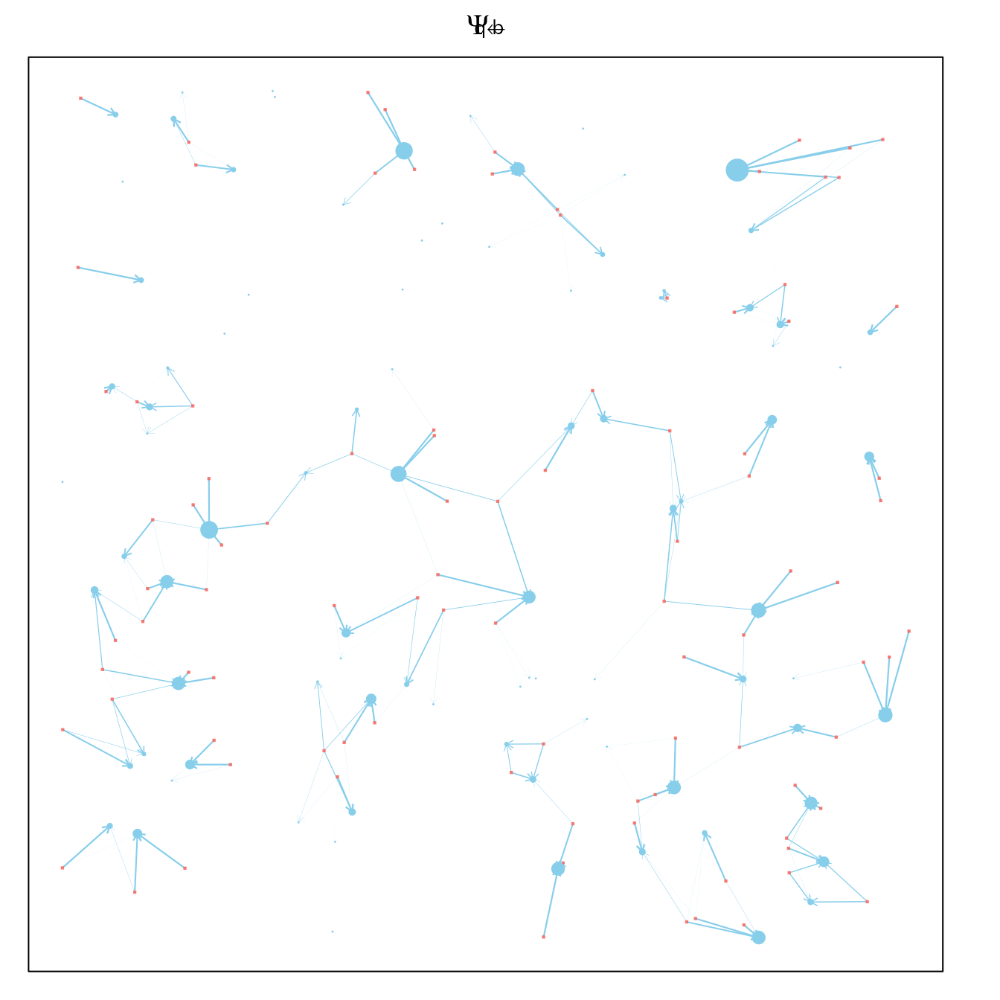
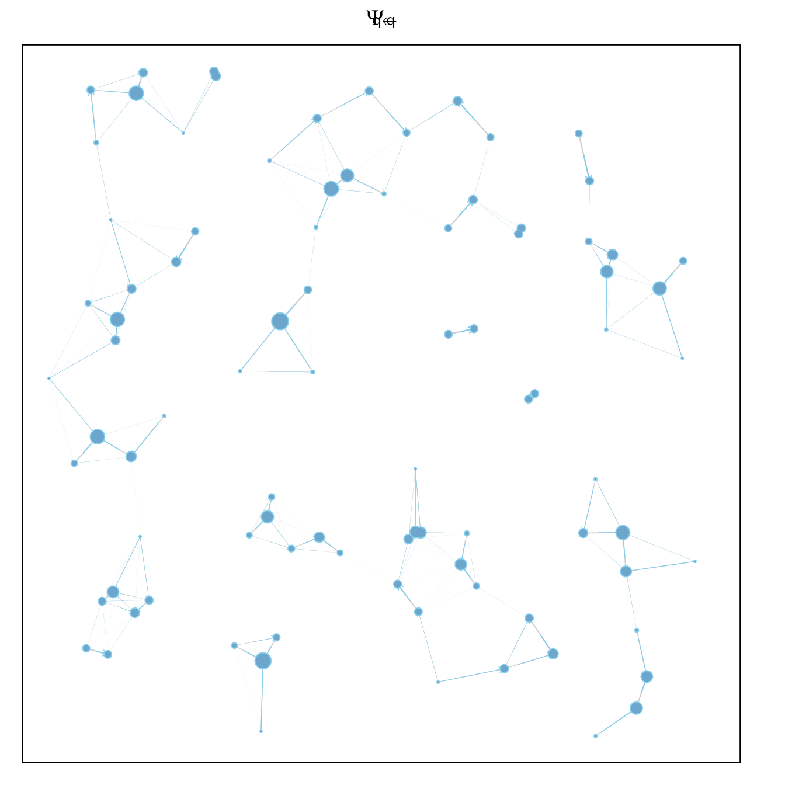

Kernels
Setting Up Movement Matrices
kernels.RmdKernel Shapes
We use functions to generate the probability of finding a point as a function of its distance and context. Let denote the distance from point to . A scalar is a linear weight on each destination making it more or less attractive from every distance.
We define some function, that assigns a weight to every potential destination by distance. These weights are used to compute dispersal matrices (see below).
Exponential
The exponential family of functions has the following form
kFb = make_kF_exp(k=2, s=1, gamma=1.5)
kFq = make_kF_exp(k=2, s=2, gamma=2)
kFs = make_kF_exp(k=0.5, s=0.5, gamma=3)
dd = seq(0, 5, by = 0.01)
plot(dd, kFb(dd), type = "l", col = "darkred", xlab = "Distance", ylab = "Weight")
lines(dd, kFq(dd), type = "l", col = "darkblue")
lines(dd, kFs(dd), type = "l", col = "olivedrab4")
Power Law
Another function family for weight by distance is the distance raised to a power.
kFb1 = make_kF_pwr(s=10, delta=1)
kFq1 = make_kF_pwr(s=1, delta=3)
kFs1 = make_kF_pwr(s=0.01, delta=2)
dd = seq(0, 5, by = 0.01)
plot(dd, kFb1(dd), type = "l", col = "darkred", xlab = "Distance", ylab = "Weight", ylim = c(0,1))
lines(dd, kFq1(dd), type = "l", col = "darkblue")
lines(dd, kFs1(dd), type = "l", col = "olivedrab4")
Dispersal Matrices
Movement among point sets is modeled using matrices that describe where mosquitoes end up after dispersing in a single time step. The proportion moving from a point in one set to another, from to , is described by a matrix or equivalently . Similarly, the proportion moving from a point in one set to a point in the other is .
In translating distances into a probability mass function using the kernel shapes, we let
These weights are normalized and translated into proportions: the proportion arriving at each point in a destination set index by from a source set indexed by is normalized across all destinations from each starting point:
Note that in the simulation models, these matrices describe the destinations for surviving mosquitoes, so we constrain the formulas such that each column sums to one. Mortality associated with dispersing is associated with the source points.
Blood Feeding
After emerging or after blood feeding, mosquitoes move from aquatic habitats to blood feed.
par(mar = c(1,1,2,2))
Psi_bq = make_Psi_xy(qq, bb, kFb, w=1)
plot_Psi_bq(bb, qq, Psi_bq)
If they are unsuccessful, they will try to blood feed again. In the visualization, asymmetries arise because of the distribution of other points: and are close, and both are further away from so mosquitoes will tend to go back and forth between and and away from The asymmetry is plotted by letting the colored portion of the arrow start
par(mar = c(1,1,2,2))
Psi_bb = make_Psi_xx(bb, kFb, w=1, stay=0.5)
plot_Psi_bb(bb, qq, Psi_bb)
par(mar = c(1,1,2,2))
Psi_bs = make_Psi_xy(ss, bb, kFb, w=1)
plot_Psi_bs(bb, qq, ss, Psi_bs)Egg Laying
After blood feeding, mosquitoes move from blood feeding sites to aquatic habitats.
par(mar = c(1,1,2,2))
Psi_qb = make_Psi_xy(bb, qq, kFb, w=1)
plot_Psi_qb(bb, qq, Psi_qb)
If they fail, mosquitoes will move again.
par(mar = c(1,1,2,2))
Psi_qq = make_Psi_xx(qq, kFq, w=1, stay=0.3)
plot_Psi_qq(bb, qq, Psi_qq)
Sugar Feeding
par(mar = c(1,1,2,2))
Psi_sb = make_Psi_xy(bb, ss, kFs, w=1)
plot_Psi_sb(bb, qq, ss, Psi_sb)
par(mar = c(1,1,2,2))
Psi_sq = make_Psi_xy(qq, ss, kFs, w=1)
plot_Psi_sq(bb, qq, ss, Psi_sq)
par(mar = c(1,1,2,2))
Psi_ss = make_Psi_xx(ss, kFs, w=1, stay=0.05)
plot_Psi_ss(bb, qq, ss, Psi_ss)